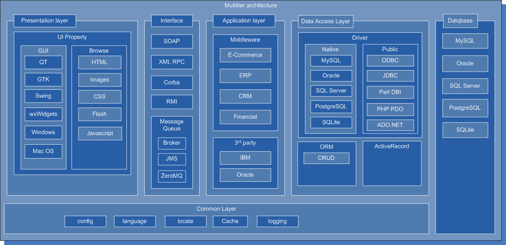

语言只是一个工具，一种实现我们需要的工具，每种每言都有它的优点和缺点和，在不同领域发挥各自的长处，并且都有它存在的意义。
语言不段地发展，市场决定它们是生存还是没落走向死亡。只有最活越，生命力强的语言才能生存下来。.net与java后面是强大的财团做后盾，大量被捆绑的客户支持他，并有完备的客服，从商业角度选择它是没有错误的。
但不要拘泥与语言，使用你最熟悉的语言,选择你最擅长的数据库和操作系统。
目前大型网站都不会单一选择一种语言和数据库，一种操作系统。例如:
像php/perl/python这种动态语言，开发速度快，周期端，对服务器性能要求低，出错率低，他们的设计这希望它能尽量使代码运行下去， 而不是抛出异常，终止执行或崩溃。而行对于开发者要求门槛比较低。 php 无论怎么开发都不会使web server 崩溃。而 Java 则不同，很容易崩溃。
Java 我认为java是个非常不错的语言，错在JVM上。这是一个垃圾的解释器，效率极差。不加优化的，把所有东东全部load进内存。采用java技术，开发成本相当高，对开发人员要求很高，而且需要一个稳定的团队。国内资深java开发人员大多转向管理层。 只有细心的人才能驾驭Java，否则不能保证软件质量，我在工作中发现php团队开发的代码质量明显比java高，bug 数量上比Java代码的 bug少很多。 我个人认为少于5年工作经验程序员很难写出一流的Java程序。 Java 架构最不能容忍的是有时不得不restart才能生效。而写的很烂程序你不得不采用restart来保证系统正常。
.net 不是很熟悉，.net 开发环境最好，速度比java快，只要有钱，全用正版，选择微软的产品很不错。很多linux爱好者鄙视M$, 对windows系统很有很大偏见，偏激。 window系统很稳定，并非像网上传的那样不堪一击，很多引起windows崩溃的原因是硬件问题。我在工作中发现国产服务器在板卡接口上做工不过关。 没有镀金或防氧化处理，导致内存丢失，cpu丢失，RAID丢失... 等等引起系统崩溃。但linux系统确能运行下去，不过一旦重启，将不能恢复。
http://en.wikipedia.org/wiki/Middleware
|  |
很多人谈到java就会涉及到三层架构即：web 容器 -> application server 应用服务器，中间件 ->数据库
三层架构其实不是什么新鲜东西，J2EE仅仅是对象请求代理体系结构的一种，任何语言都能实现三层架构。中间件不是Java专利
编译执行的语言基本都支持Corba
python 则有Zope，Zope是一个很成功App Server。足以比肩J2EE. python 也支持corba库，我尝试过python -> corba -> PostgreSQL.但性能不佳。
php/perl 一样可做到,采用SOAP，XML-RPC等技术,可以实现部分功能。但我们可以在架构上做些改变。
总之，不要拘泥于三层架构，仅仅是实现方式的一种。没有最合理，也没有最好的，根据你的需求作出调整，最终是看结果，而不是实现过程。
中间件的概念
/--> app server ---\
web ---> ---> app server ----> Database
\--> app server ---/
php 分层
/--> web server ---\
load balance ---> --> web server ----> -> Database
\--> web server ---/
/--> web server ---\ /--> app server ---\
load balance ---> --> web server ----> -- SOAP/XMLRPC--> --> app server ----> Database
\--> web server ---/ \--> app server ---/
你可以采用复核型架构，我曾经就做过这样的项目php -> soap -> .net framework
/--> module ---\
apache ---> php ----> module ----> MySQL Database
\--> module ---> soap ---> IIS ---> DCOM ---> C# script ---> SQL Server
\-> module ---> tomcat ---> jasper report ---> Oracle
我们系统有一个需求是，在php中创建word,excel文档，编辑文档，比较文档..., 我们需要调用office.dll实现
同时我们有一个报表系统，是通过jasper report 实现的
另外fastcgi
.--> fastcgi process ---. / \ web server ---> ---> fastcgi process -----> Database \ / `--> fastcgi process----'
云计算还是个概念，但在云计算大潮中，不支持云计算，显得没有技术含量。
被网络炒得“神乎其神”。起初我误以为是分布式计算的下一代，后来发现和分布式计算根本两个不同的东西。与网格计算/分布式计算扯不上边。
"云计算"这个词已经被泛滥使用，
比较靠谱是亚马逊EC2 其实就是一堆Xen虚拟机, Dell说他的刀片服务器是云计算，Vmware 也说是云计算，Oracle 说他的VirtualBox是云计算，说ZFS是云存储。我也说不清楚，自己斟酌。
没有真正的跨平台语言，所谓跨平台都是忽悠人。
只要提供不同平台的编译器加条件编译，即可实现跨平台。或提供不同平台的解释器，也可一实现跨平台。
例如大家都很看中Java的跨平台，但想一下，这个“跨平台”是要打引号的，实际上这个跨平台准确的说是跨Sun提供的标准JVM平台，而非OS平台。只要某个JVM支持某个OS，你的程序才可以跨过去。如果JVM不支持这个OS平台，Sorry，你的程序不可能跨过去。 不信你去java.sun.com下载jre你会发现仅仅提供四个平台版本Linux,Mac OS X,Solaris,Windows
很多OS都不支持Java。如FreeBSD 就不支持Java,必须使用Linux glib 运行Java，效率很低,IBM用的是IBM 自己开发 JVM 至于他和Sun Java有什么关系，可能是授权。
只要能让你的程序翻译成JVM字节码，你的程序就可运行在JVM上。如：
php通过Quercus(http://quercus.caucho.com/)把PHP文件编译成.java文件,让后javac编译成class文件后在一些JavaEE应用容器中运行PHP程序
Jython可以将Python编译成java文件
JRuby可以将Ruby编译成java文件
虚拟机并非只有JVM，还有Parrot, Perl6 就是在Parrot虚拟机上实现的。
另外开发一种新语言也并非难事，只要你有时间精力投入我想不出3年，就可以打造一门新语言。
开发新语言也并非难事，只要你有时间精力投入我想不出3年，就可以打造一门新语言。
错！
编译不能保证代码安全，仅仅能保证你的代码不被人使用。
但目前中国人力成本相当的便宜，重新实现你的功能逻辑并非难事。所以只要你的网站上线，在很短的时间内就可以出现很多山寨版。
编译流行的原因是为了解决微机的速度以及存储问题，随着微机处理器技术突破，你根本不用担心速度问题。中型机与大型机领域脚本语言站多数。
重用可以减轻劳动，但过分重用，会牵一发动全身。
尤其对于二次开发者不熟悉你的系统，导致修改一个bug，又产生新的bug。
另外模板也不宜拆分的过于零碎。模本的组装，需要很多时间并很消耗你的资源。
Mozilla Firefox 及扩展
Web Developer
Firebug 调试必备工具
YSlow 性能分析工具
Live HTTP Headers 相当于HTTP Sniffer嗅探器，可以跟踪HTTP协议头，调试cache时比较有用。
IE Tab 用于IE/Firefox之间切换
FoxClocks 如果开发工作跨时区，这个很有用
Foxmarks Bookmark Synchronizer/Weave 将开发资源放入书签，同时在开发团队中保持同步
Fasterfox 可以一显示页面载入时间，方便页面优化. 如果安装了YSlow可以不装这个插件。
FireFTP
Adblock Plus
flash block
Chat Zilla
Super DragAndGo
开发工具
visual studio 不必多说
eclipse 出身于Java但他不单单是Java开发工具，目前他已经是一个通用的语言IDE，我一直用eclipse写PHP,Python,Perl还有Docbook XML
TortoiseSVN 版本控制工具.
WinMerge 文件差异比较与合并 , Beyond Compare 我用过最好的比较合并工具。